File: 000240.gt.txt (if the image is defective, simply delete all Arabic text and the line will be excluded)
وأعطاك عاجل الخير وآجله ، وظاهره وباطنه .
File: 000241.gt.txt (if the image is defective, simply delete all Arabic text and the line will be excluded)
وليس يجمع ذلك إلا كرام الكتب النفيسة ، المشتملة على ينابيع
File: 000242.gt.txt (if the image is defective, simply delete all Arabic text and the line will be excluded)

العلم ، والجامعة لكنوز الأدب ، ومعرفة الصناعات ، وفوائد الأرفاق ،
File: 000243.gt.txt (if the image is defective, simply delete all Arabic text and the line will be excluded)
وحجج الدين الذي بصحته ، وعند وضوح برهانه ، تسكن النفوس ، وتثلج
File: 000244.gt.txt (if the image is defective, simply delete all Arabic text and the line will be excluded)
الصدور ، ويعود القلب معمورا ، والعز راسخا ، والأصل فسيحا(2) .
File: 000245.gt.txt (if the image is defective, simply delete all Arabic text and the line will be excluded)
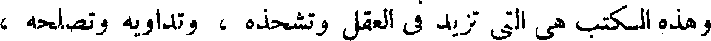
وهذه الكتب هي التي تزيد في العقل وتشحذه ، وتداويه وتصلحه ،
File: 000246.gt.txt (if the image is defective, simply delete all Arabic text and the line will be excluded)
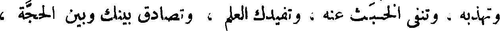
وتهذبه ، وتنفي الخبث عنه ، وتفيدك العلم ، وتصادق بينك وبين الحجة ،
File: 000247.gt.txt (if the image is defective, simply delete all Arabic text and the line will be excluded)
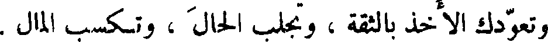
وتعودك الأخذ بالثقة ، وتجلب الحال ، وتكسب المال .
File: 000248.gt.txt (if the image is defective, simply delete all Arabic text and the line will be excluded)
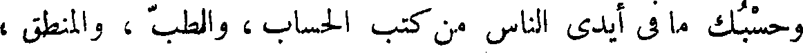
وحسبك ما في أيدي الناس من كتب الحساب ، والطب ، والمنطق ،
File: 000249.gt.txt (if the image is defective, simply delete all Arabic text and the line will be excluded)
والهندسة ، ومعرفة اللحون ، والفلاحة ، والتجارة ، وآبواب الأصباغ ،
File: 000250.gt.txt (if the image is defective, simply delete all Arabic text and the line will be excluded)
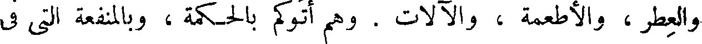
والعطر ، والأطعمة ، والآلات . وهم أتوكم بالحكمة ، وبالمنفعة التي في
File: 000251.gt.txt (if the image is defective, simply delete all Arabic text and the line will be excluded)
الحمامات وفي الأصطرلابات ، والقرسطونات(1) وآلات معرفة الساعات ،
File: 000252.gt.txt (if the image is defective, simply delete all Arabic text and the line will be excluded)
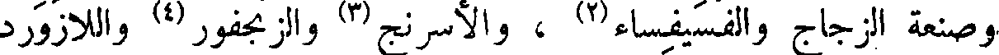
وصنعة الزجاج والفسيفساء(2) ، والأسرنج(3) والزنجفور(4) واللازورد
File: 000253.gt.txt (if the image is defective, simply delete all Arabic text and the line will be excluded)
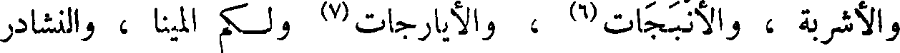
والأشربة ، والأنبجات(6) ، والأيارجات(7) ولكم المينا ، النشادر
File: 000254.gt.txt (if the image is defective, simply delete all Arabic text and the line will be excluded)
( تخليد العرب لمآثرها )
File: 000255.gt.txt (if the image is defective, simply delete all Arabic text and the line will be excluded)
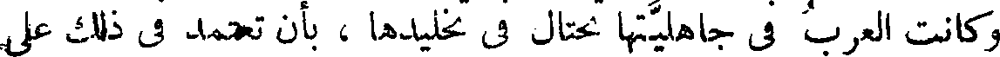
وكانت العرب في جاهليتها تحتال في تخليدها، بأن تعتمد في ذلك على
File: 000256.gt.txt (if the image is defective, simply delete all Arabic text and the line will be excluded)

الشعر الموزون ، والكلام المقفى ، وكان ذلك هو ديوانها . وعلى أن الشعر
File: 000257.gt.txt (if the image is defective, simply delete all Arabic text and the line will be excluded)
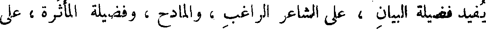
يفيد فضيلة البيان ، على الشاعر الراغب ، والمادح ، وفضيلة المأثرة ، على
File: 000258.gt.txt (if the image is defective, simply delete all Arabic text and the line will be excluded)
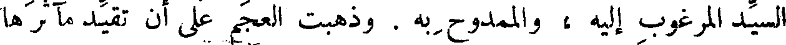
السيد المرغوب إليه ، والممدوح به . وذهبت العجم على أن تقيد مآثرها
File: 000259.gt.txt (if the image is defective, simply delete all Arabic text and the line will be excluded)
بالبنيان ، فبنوا مثل كرد بيداد(1) ، وبنى أردشير بيضاء إصطخر ،
File: 000260.gt.txt (if the image is defective, simply delete all Arabic text and the line will be excluded)
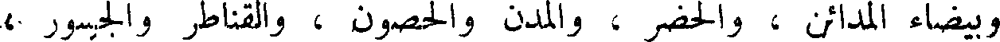
وبيضاء المدائن ، والحضر ، والمدن والحصون، والقناطر والجسور ،
File: 000261.gt.txt (if the image is defective, simply delete all Arabic text and the line will be excluded)
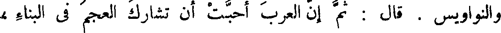
والنواويس . قال : ثم إن العرب أحبت أن تشارك العجم في البناء ،
File: 000262.gt.txt (if the image is defective, simply delete all Arabic text and the line will be excluded)

وتنفرد بالشعر ، فبنوا غمدان ، وكعبة نجران(2) ، وقصر مارد ، وقصر
File: 000263.gt.txt (if the image is defective, simply delete all Arabic text and the line will be excluded)

مأرب، وقصر شعوب(3) والأبلق الفرد؛ و [فيه وفي (4)] مارد ، قالوا
File: 000264.gt.txt (if the image is defective, simply delete all Arabic text and the line will be excluded)
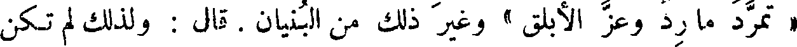
« تمرد ما رد وعز الأبلق » وغير ذلك من البنيان . قال : ولذلك لم تكن
File: 000265.gt.txt (if the image is defective, simply delete all Arabic text and the line will be excluded)
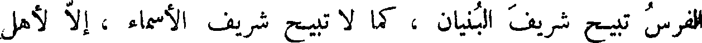
الفرس تبيح شريف البنيان ، كما لا تبيح شريف الأسماء ، إلا لأهل
File: 000266.gt.txt (if the image is defective, simply delete all Arabic text and the line will be excluded)
38 على حيطان الدار ، وكالعقد على الدهليز وما أشبه ذلك ، فقال بعض من
File: 000267.gt.txt (if the image is defective, simply delete all Arabic text and the line will be excluded)
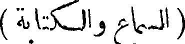
( السماع والكتابة )
File: 000268.gt.txt (if the image is defective, simply delete all Arabic text and the line will be excluded)
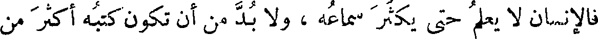
فالإنسان لا يعلم حتى يكثر سماعه ، ولا بد من أن تكون كتبه أكثر من
File: 000269.gt.txt (if the image is defective, simply delete all Arabic text and the line will be excluded)
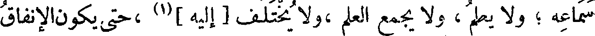
سماعه ؛ ولا يعلم ، ولا يجمع العلم ،ولا يختلف [إليه](1) ،حتى يكون الإنفاق
To Save: `Ctrl+s`, make sure to choose `Webpage, complete`!